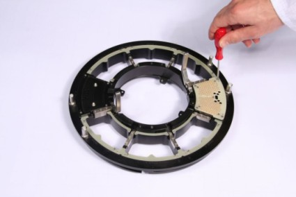

Prepare the pogo tower frame
About this task
This task is about filling the pogo tower frame with blank and full segments.
Note Remember to use an ESD ground strap during installation.
Before you begin
Ensure you have enough empty and full pogo segments available.
Procedure
Install full and blank pogo segments into the 12" pogo tower frame using a Torx T8
screwdriver as shown in the next picture.

What to do next
Prepare the adapter plate kit.
Functional changes
- Introduced in SmarTest 6.3.2